What is sound?
Vibrations (compressions and rarefactions) of air that the human ear can detect.
How does sound travel?
In longitudinal waves through gas, liquids and solids.
What changes the pitch of sound?
Frequency, number of waves per second.
What is ultrasound?
sound with frequencies higher than 20000 Hz
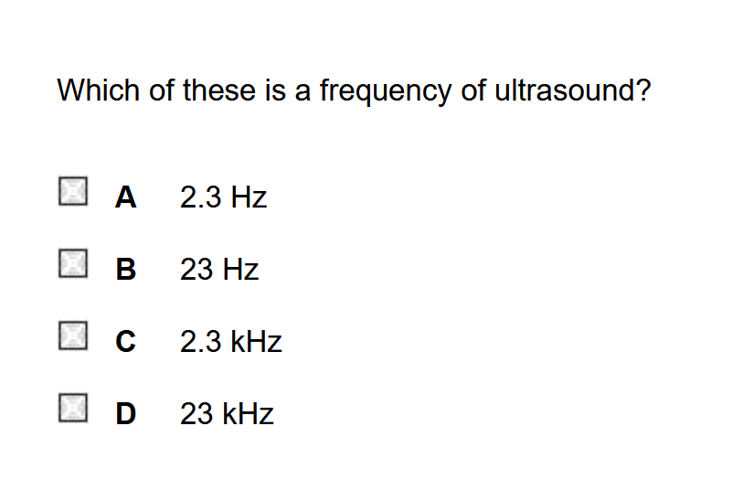
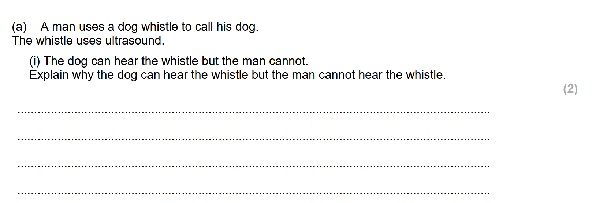
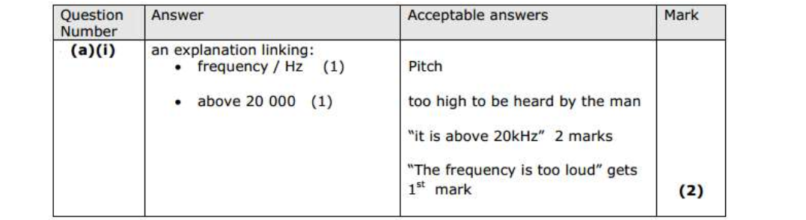

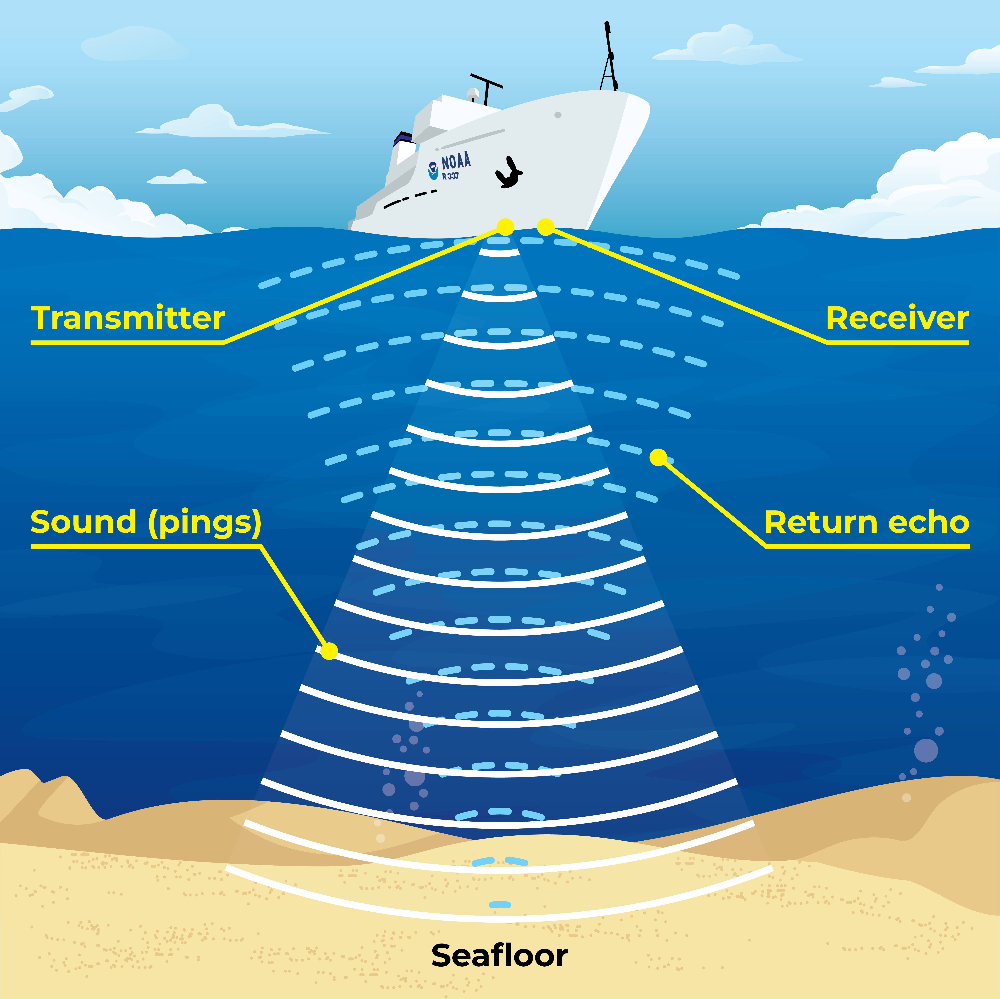
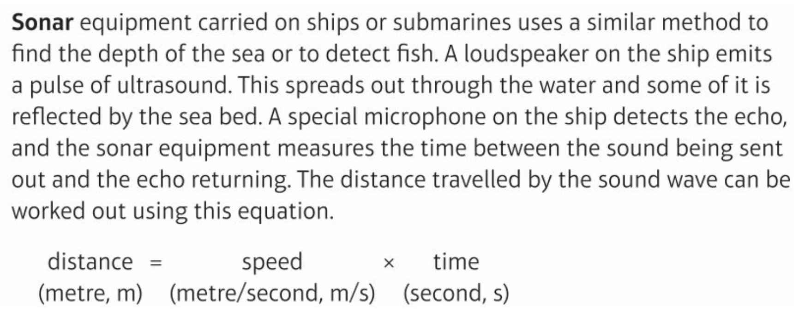


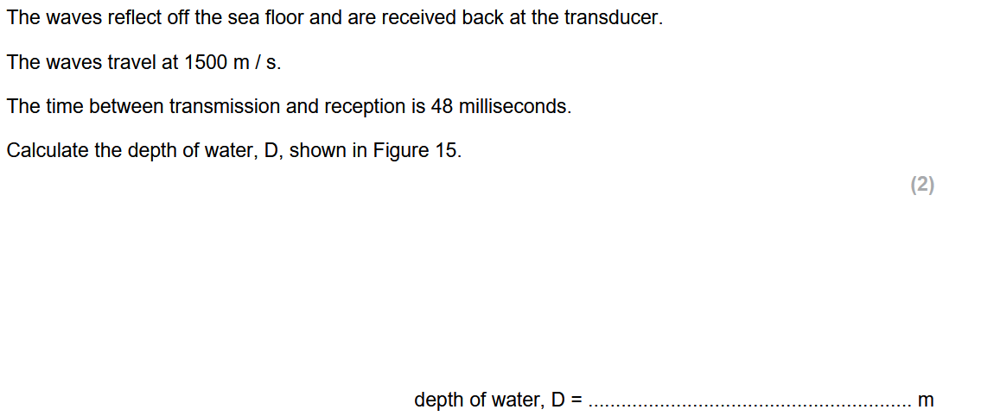
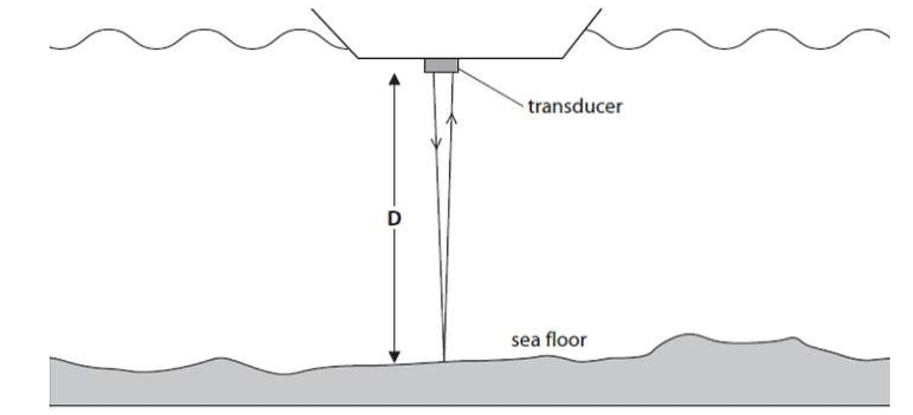
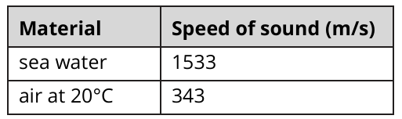
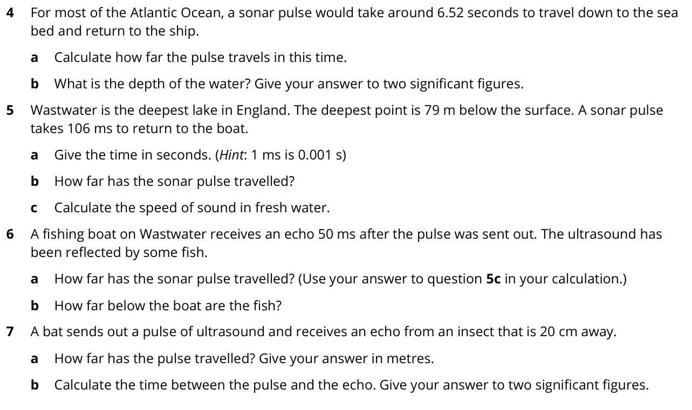
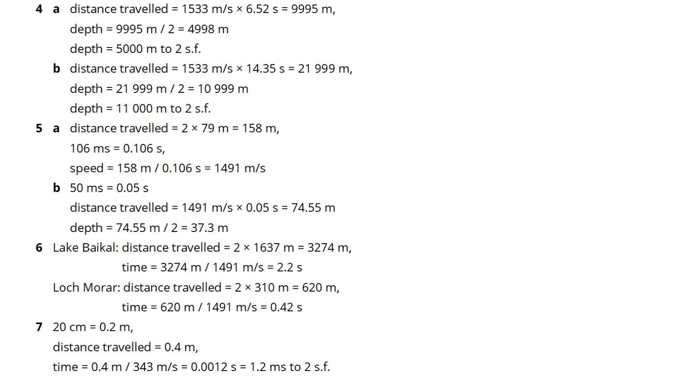
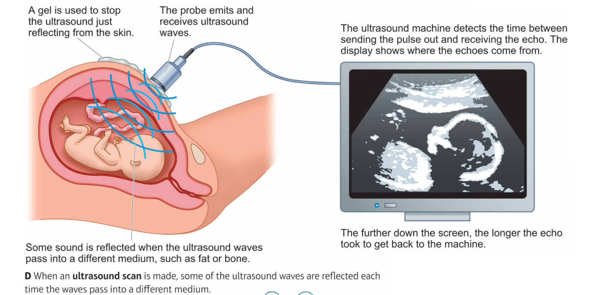
A _______ is used to stop the ultrasound just reflecting from the skin.
gel
The _________ emits and receives ultrasound waves.
probe
Some sound is ______________ when the ultrasound waves pass into a different medium.
reflected
The ultrasound machine detects the ________ between sending the _________ out and receiving the echo.
time, pulse
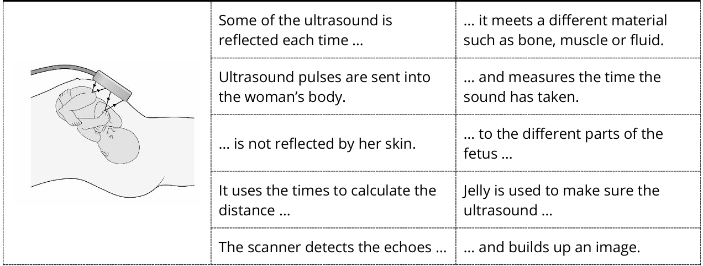
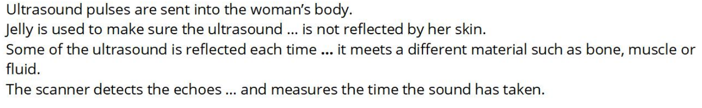
Why is a gel used during an ultrasound scan?
A gel is used to stop the ultrasound just reflecting from the skin.
What is the purpose of the probe in an ultrasound scan?
The probe emits and receives ultrasound waves.
What happens to some sound when it passes through different media?
it reflects
What is an echo?
An echo is a reflected sound wave.